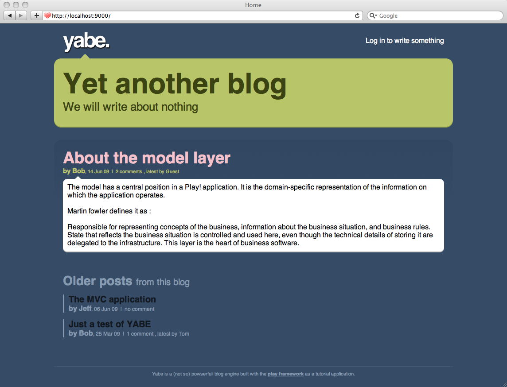

MODERN WEB TEKNOLOJİLERİ
HTML5 - CSS3 - Javascript
Eskiden...
Her işi sunucu yapardı...
Tarayıcının tek görevi önüne geleni göstermekti...

Şimdi...
Siteler artık dinamik ve akıcı.

Kullanıcı deneyimi önemli.
Sunucu İstemci Mimarisi

İstemci (Client): Tarayıcı (Chrome, Safari, Firefox vs.)
Sunucu (Server): Bir teknoloji!
İstemci "istek" gönderir. Sunucu bunu işler ve cevap gönderir.
Bir web sayfasının anatomisi
Site = HTML + CSS + JavaScript
| HTML: | Yapı + İçerik |
| CSS: | Görünüş |
| JS: | Dinamik bileşenler / uygulama |
HTML
- Sayfanın genel yapısını oluşturur.
- İçerik burada yer alır.
- Paragraflar, tablolar, fotoğraflar, ses, video vb.
HTML — Örnek
CSS nasıl bir şey?
html, body {
background: #364B66;
font-family: Helvetica, Arial, Sans !important;
}
body {
color: #333333;
}
#header {
padding: 10px 0;
}
img {
border: 1px black;
}
.special {
color: red;
}
.special:hover {
color: red;
}
CSS'siz

CSS'li
Bir CSS Kuralı...

Element Selector
p {
text-align: center;
}
Tüm p elemanlarını etkiler.
<p>Bunu etkiler.</p>
<img src="...">
<p>Bunu da.</p>
ID Selector
#mySpecialElement: {
color: red;
font-size: 25px;
}
#mySpecialElement id'li elemanı etkiler.
<p>Etkisiz.</p>
<p id="mySpecialElement">Ben özelim!</p>
Class Selector
.error: {
color: red;
font-weight: bold;
}
div.error: {
color: yellow;
}
İlki error sınıfına sahip her şeyi, ikincisi error sınıfına sahip div elemanlarını etkiler.
<p class="error">Ben kırmızı ve koyuyum.</p>
<div class="error">Ben sarı ve koyuyum!</div>
ID vs. Class
- Aynı ID'den birden fazla olamaz.
- Farklı elemanlar aynı sınıfa sahip olabilir.
- Bir eleman birden fazla sınıfa sahip olabilir.
<div id="header" class="upper-content">
I'm the only header in the page!
</div>
<div class="upper-content advertisement">
I also have upper-content class. And I also have advertisement class on me!
</div>
Daha detaylı selectorler...
p strong {
color: red;
}
div#special.test.test2 > span {
font-size: 50px;
}
span:hover {
font-weight: bold;
}
<div id="special" class="test2 test">
<span>
The span
<span>The inner span!</span>
</span>
<p>The p<strong>Strong inside p</strong></p>
</div>
CSS Nasıl kullanılır?
Yöntem 1: Bodoslama
<p style="color:red">Some red text.</p>
Çok tercih edilmez. Neden?
Yönetmesi zor.
Yöntem 2: Her Sayfada, En Tepede
<head>
<style type="text/css">
p {
color: blue;
font-size: 12px;
}
</style>
</head>
Tartışma — Avantajlar & Dezavantajlar?
Yöntem 3: Ayrı bir stil sayfasında
<head>
<link rel="stylesheet" type="text/css" href="style.css">
</head>
Tartışma — Avantajlar & Dezavantajlar?
Aynı stil dosyası birden fazla sayfada kullanılır.
Önbellek sayesinde, hız artar, maliyet azalır.
Büyük projelerde yönetimi kolay.
Bootstrap ile neler yapılır?..
İkonlar...

Dropdown menüler

Butonlar ve navbar'lar

ve daha pek çok şey...
JavaScript
JavaScript ile ne yapılabilir?
- Şık fotoğraf göstericileri
- Zengin bilgi girişi araçları
- Değişik sayfa yerleşimleri
- ve aklınıza başka ne gelirse...
JavaScript nasıl kullanılır?
Yöntem 1: Sayfa İçinde
<html>
<head>
<script>
alert("I am a JavaScript!");
</script>
</head>
<body>
<p>I am a P</p>
<script>
alert("I am a JS in body!");
</script>
</body>
</html>
Yöntem 2: Ayrı bir JavaScript dosyasında
<script src="javascript.js"></script>
Değişkenler & Veri Tipleri
Değişkenler
Tanımlama
var info;Değer atama
var info2 = 'JavaScript iyidir!';info = 'JavaScript iyidir!';Veri tipleri
var aString = "Bu bir stringtir."; /* Tek ya da çift tırnak olabilir. */
var aNumber = 12; /* Bu bir sayıdır */
var aBoolean = true;
var anUndefined; /* Bu değersizdir. */
var anotherUndefined = undefined;
var aNull = null; /* Değerinin olmaması bir değerdir. */
Diziler
var anEmptyArray = [];
var cars = ['Dacia', 'Renault', 'Opel'];
console.debug(cars[0]); /* Dacia */
cars[0] = 'Nissan';
cars.length; /* 3 */
cars.push('Honda');
animals.pop(); /* returns Honda */
Veri Tipleri ve Eşitlik
var one = 1; /* Number 1 */
var oneS = "1"; /* String 1 */
one == oneS /* true */ /* çok sakat! */
one === oneS /* false */
one != oneS /* false */ /* çok sakat! */
one !== oneS /* true */
Özellikler
- Özel bir tip tanımlaması yok.
- İsimler harf,
_veya$ile başlar. - Harf rakam
_ve$içerir - Büyük/küçük harf önemli.
Fonksiyonlar
Nasıl tanımlanır?
/* Yöntem 1 */
function myFunction(name) {
alert('hello' + name);
}
myFunction(name); /* Kullanım */
/* Yöntem 2 */
var sayHello = function(name) { alert("Hello " + name); };
var sayHi = function(name) { alert("Hi " + name); };
var myFunction2 = sayHello;
myFunction2(name); /* Hello Hasan. */
myFunction2 = sayHi;
myFunction2(name); /* Hi Hasan. */
İç içe fonksiyonlar
Dıştaki değişkenler, içeride kullanılabilir.
var user = "Hasan";
var setAlarm = function(message, timeout) {
handle = function() {
console.log("Şimdi " + user + "uyandırılacak...");
console.log(message);
};
setTimeout(handle, timeout);
}
setAlarm("Uyan kardeş sabah oldu!", 100);
// handle() Erişilemez.
Değişkenlerin geçerlilik scope'ları
var name1 = "a";
var aFunction = function(condition) {
var name1 = "c";
if(condition) {
var name2 = "b";
}
alert(name2)
}
aFunction(true);
alert(name1);
Kendi kendini çalıştıran fonksyionlar
(function(){
var foo = 'Hello';
var bar = 'World!'
function baz(){
return foo + ' ' + bar;
}
})();
Nesneler
Bir nesne...
var myObject = {
myProperty: 'hello i am string',
aNumberProperty: 12,
anInnerObject: {
innerOne: "a",
innerTwo: function(param) { console.debug("Param is " + param); }
},
myMethod: function() {
console.log(this);
return this;
}
}
Nesnelere erişim
var car = {
brand: 'Ford',
model: 'Fiesta'
};
console.log(car.brand);
console.log(car['model']);
Nesneler sonradan genişletilebilir
var myObj = {
one: "example 1",
two: {
twoOne: "example 2.1",
twoTwo: "example 2.2"
},
tree: "example 3"
};
delete myObj.tree;
myObj.four = "example 4";
myObj.two.twoOne = "example 2.1.3";
/* myObj.five.one = NOT POSSIBLE! */
Document Object Model
JavaScript'in HTML ile buluştuğu yer...
- Bir dizi JavaScript nesnesidir.
- HTML'in JavaScript üzerindeki yansıması olarak düşünülebilir.
- Tarayıcı tarafından sağlanır.
- Web sayfası DOM ile izlenebilir ve üzerinde değişiklik yapılabilir.
- Tüm HTML elementleri DOM ağacının bir parçasıdır.
- HTML elementlerinin attributeları ve eventleri vardır.
JavaScript ile DOM'a erişmek ve DOM'u modifiye etmek için bazı nesneler vardır:
window, document...
document.body
document.URL
window.location
Örnek
<div id="myElement">This a div id'd myElement</div>
var item = document.getElementById('myitem');
item.style.color = 'red';
document.body.innerHTML = 'Tüm sayfayı değiştirdim.
';

jQuery nedir?
Bir JavaScript kütüphanesidir.
- Cross browser fonksiyonlar
- Kolay kullanım
Nasıl kullanılır?
Web sayfanıza eklersiniz.
<head>
<script type="text/javascript" src="http://code.jquery.com/jquery-2.0.3.min.js"></script>
</head>
İndirip eklemek ya da CDN kullanmak
jQuery ile yapılabilecekler
- AJAX
- Attribute manipülasyonu
- CSS manipülasyonu
- DOM'da gezinti
- DOM manipülasyonu
- Efektler
- Eventler
- Form yönetimi
- Selectorler
- Utilities
jQuery yüzlerce metod sunar.
jQuery Selectorleri
document.getElementById(), document.getElementsByTagName()
jQuery selectorleri: Kolay, cross browser
var divs = $("div"); // Sayfadaki tüm div'ler
var img = $("#header"); // header id'sine sahip element
var images = $(".picture"); // picture class'ına sahip tüm elementler
jQuery Selectorleri: Adrese Teslim
var something = $("div")
.children("p.class1")
.find("h1.class2")
.filter(".class3")
.parent()
.siblings("div.class3")
.find("*");
/* Amcasının oğlunun eltisinin kaynının dedesinin
komşusunun Ankara'daki kızının üçüncü kuzeni... */
Attribute'lar ve CSS'le oynamak
<img id="mainpicture" src="http://www.nokia.com/logo.png">
var img = $('#mainpicture');
img.attr('src'); /* returns http://www.nokia.com/logo.png */
img.attr('src', 'http://www.microsoft.com/logo.png');
img.css('width');
img.css('width', '200px');
img.addClass("newlogo");
Hokus pokus!
<img id="mainpicture" class="newlogo" src="http://www.microsoft.com/logo.png" style="width: 200px;">
HTML ile oynamak
<div id="results">Sonuç bulunamadı.!</div>
<div>Sonuç mu? Ne sonucu? Sonuç ne arar la bazarda?</div>
var resultDiv = $('#results');
resultDiv.html(); /* returns "Sonuç bulunamadı.!" */
resultDiv.html('12 sonuç bulundu.');
$("div").not(resultDiv).remove();
Hokus Pokus!
<div id="results">12 sonuç bulundu.</div>
Yeni bir element yaratmak
<body></body>
$('<div></div>')
.attr("id", "myPrecious")
.text("You shall not pass!")
.appendTo($(body));
Expecto Patronum! *
<body>
<div id="myPrecious">You shall not pass!</div>
</body>
Document Ready
- Bir web sayfasının yüklenmesi zaman alır.
- JavaScript yüklediği anda çalışır.
- Bazen web sayfasının yüklendiğinden emin olmak gerekir.
$(document).ready(function() {
alert("Bu mesaj tüm sayfa yüklendikten sonra görünür.");
});
Eventler
Event: Bir şey oldu!
Mesela...
click— Bir elemente tıklandı.mousemove— Mouse ile elementin üzerinde geziliyor.ready— Bir şey hazır?- Tüm Eventler
Event Handling
<div id="counter">not ready!</div>
<a id="increase" href="http://www.google.com/">Click me to increase</a>
$(document).ready(function() {
var counter = 0;
var counterDiv = $("#counter");
var increaseA = $("#increase");
/* init */
counterDiv.text(counter); /* Bu olmasaydı ne olurdu? */
increaseA.click(function(event) {
event.preventDefault(); /* Bu da nesi? */
counter++;
counterDiv.text(counter);
});
});

AJAX
Asynchronous JavaScript And XML
- Asenkron doğru, XML artık değil.
- Sayfayı yenilemeden sunucu ile bilgi alışverişi.
jQuery'de Ajax
alert("submitting ajax");
$.ajax({
url: 'http://www.example.com/getUserList',
data: {
count: 20,
name: "Mahmut"
},
method: "GET",
dataType: 'json',
success: function (data) {
/* { "users": [
{ "firstName": "Mahmut", "lastName": "Tuncer" },
{ "firstName": "Mahmut", "lastName": "Skywalker" }
]
}
*/
alert(data.users[0].firstName);
},
error: function(data) {
alert("Bir hata oluştu.");
}
});
alert("submitted ajax");
Angular.js nedir?
- Bir framework
- DOM ile JavaScript arasında iki yönlü veri alışverişi olmasını savunur.
- Arayüz ile uygulama mantığı ayrı olmalıdır.
- Eventleri takip etme ve gerekli güncellemeleri yapma işini otomatize eder.
Başka bir sürü özellik de sunar tabi...
Material Tasarımı Örneği
See the Pen Angular Material Complex Dialog by Marcy Sutton (@marcysutton) on CodePen.
Basit Bir Uygulama Örneği
See the Pen Angular JS - Basic app by eMaj (@eMaj) on CodePen.
Facebook'tan ReactJS

Basit bir 'Component' tasarımı

Sanal DOM
See the Pen The Virtual DOM in React.js by Jens Ahrengot Boddum (@Ahrengot) on CodePen.
Drag & Drop
See the Pen Rich React.js drag-and-drop example by Kent William Innholt (@kentwilliam) on CodePen.
Javascript demek
tarayıcı mı demek?
Bu kadarcık mı?

Javascript ile embedded programlama!
var tessel = require('tessel');
var servos = require('servo-pca9685').connect(tessel.port('A'));
var degrees = 0;
setInterval(function () {
servos.moveServo(1, degrees);
degrees = degrees == 0 ? 180 : 0;
}, 500);
Gerçek hayattan JS/CSS3/HTML5 örnekleri...
- Bu sunum.
Gerçek zamanlı uygulamalar
- 3 boyutlu oyunlar
- MySpace (node.js)
- Google Maps